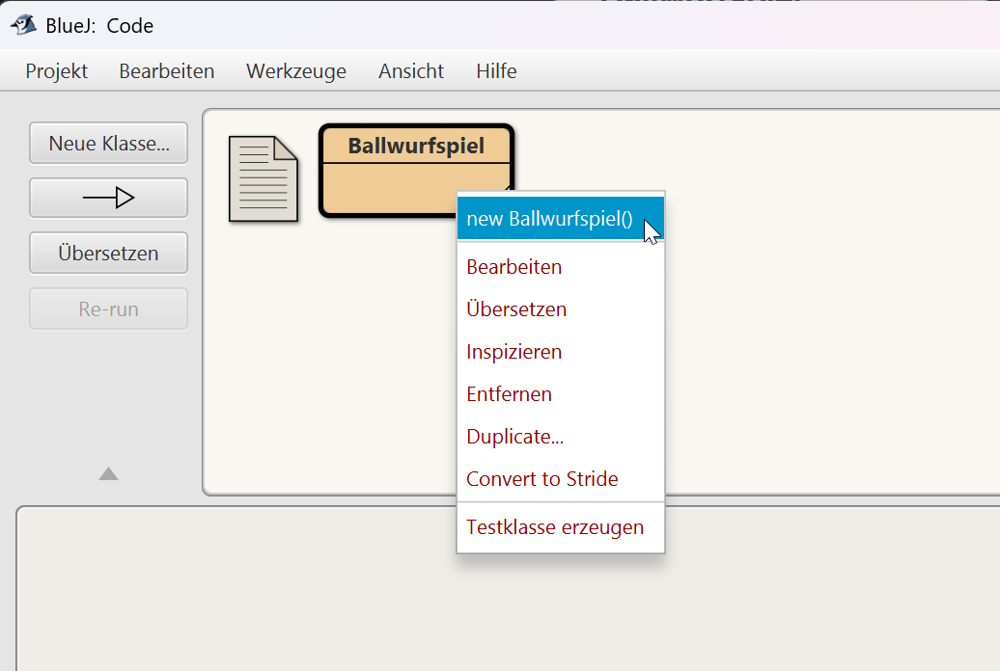
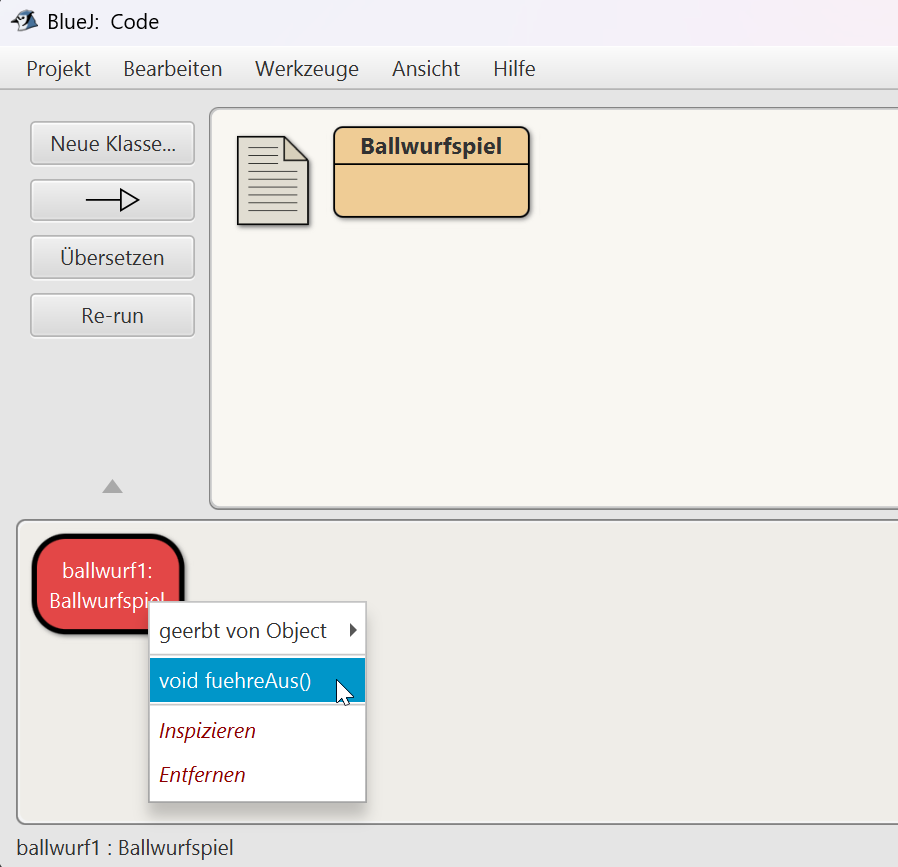
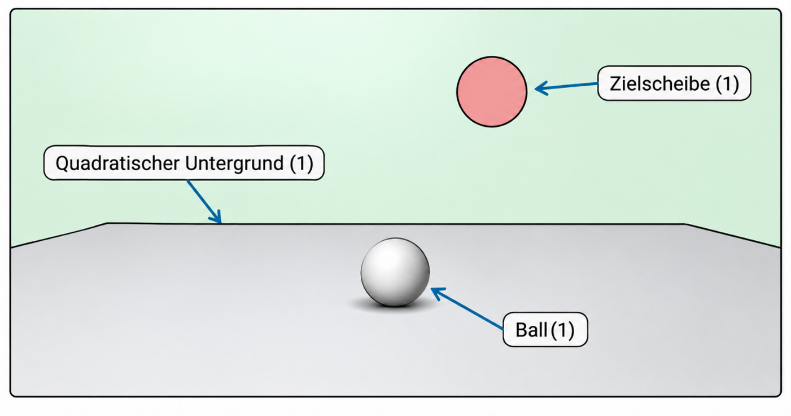

Informatik · Einführungsphase NRW · Java und GLOOP
Vom Prototyp zum Ballwurfspiel
Du bekommst den Ausgangscode in der Schule. Diese Selbstlerneinheit begleitet dich am Tablet, während du am PC in BlueJ untersuchst, planst, programmierst und testest.
Erst verstehen, dann verändernHilfen in mehreren StufenZusatzwege für NeugierigeReferenzen bei Bedarf
Woran du am Ende erkennst, dass du weitergekommen bist
Du kannst den vorhandenen Java-Code mit Begriffen aus der Objektorientierung beschreiben.
Du erklärst, wie Tastaturabfragen, Bedingungen und Wiederholungen zusammenwirken.
Du ergänzt die Szene um eine passende Zielscheibe und eine tragfähige Grundfläche.
Du planst die Spielphasen, bevor du sie programmierst.
Du prüfst dein Programm mit begründeten Testfällen und kannst Fehler systematisch eingrenzen.
Wichtig: Hier steht absichtlich keine vollständige Musterlösung und keine Folge von Codezeilen zum Abschreiben. Die Aufgaben helfen dir, eigene Entscheidungen zu treffen. Programmiere parallel in BlueJ und sichere deinen Arbeitsstand nach den Vorgaben deiner Lehrkraft.
Du kommst bei einem Begriff nicht weiter?
Du musst nicht alles auf einmal lernen. Öffne nur die kurze Erklärung, die du gerade brauchst, und kehre dann zu deiner Aufgabe zurück.
Am PC läuft BlueJ; am Tablet bleibt diese Seite geöffnet. Die folgenden Screenshots stammen aus BlueJ. Bezeichnungen und Anordnung können sich je nach Version und Sprache unterscheiden.
Bevor du eine Klasse neu anlegst
Prüfe, was die Lehrkraft bereitgestellt hat. Enthält der BlueJ-Projektordner bereits die Klasse Ballwurfspiel, öffne das Projekt und verwende diese Klasse. Lege keine zweite gleichnamige Klasse an.
Fall A · Ein BlueJ-Projekt liegt auf dem Netzlaufwerk
Wähle in BlueJ Projekt → Projekt öffnen … und öffne den bereitgestellten Projektordner.
Die Klassen erscheinen als Kacheln im Projektfenster. Doppelklicke auf Ballwurfspiel, um den Code zu lesen.
Übersetze das Projekt erst, wenn du den Ausgangscode geprüft hast.
Fall B · Du erhältst nur den Java-Quelltext
Erstelle in BlueJ über Projekt → Neues Projekt … zunächst einen Projektordner an dem Speicherort, den deine Lehrkraft vorgibt.
Wähle Neue Klasse …, lasse den Typ Klasse ausgewählt und trage als Namen genau Ballwurfspiel ein. Groß- und Kleinschreibung müssen übereinstimmen.
Öffne die neue Klasse. Ersetze den BlueJ-Platzhalter durch den vollständigen Quelltext vom Netzlaufwerk und speichere.
Wähle Übersetzen (in einer englischen Oberfläche Compile). Lies die erste Fehlermeldung vollständig, statt sie zu übergehen.
Wenn GLOOP als unbekannt markiert wird
Der Code verwendet die schulische GLOOP-Bibliothek. Entferne den Import nicht auf Verdacht. Prüfe, ob du das vorbereitete BlueJ-Projekt und die schulische Umgebung verwendest; bitte bei Bedarf deine Lehrkraft um Hilfe bei der Bibliothekseinrichtung.
Ein Spielobjekt erzeugen und fuehreAus() aufrufen
In der Ausgangsfassung ist fuehreAus() eine nicht-statische Methode. Sie gehört zu einem konkreten Spielobjekt. Deshalb genügt es nicht, nur die Klassenkachel zu öffnen.
Übersetze die Klasse erfolgreich.
Klicke mit der rechten Maustaste auf die Klassenkachel Ballwurfspiel und wähle den Konstruktor new Ballwurfspiel().

Objekt erzeugen: Wähle den Konstruktor im Kontextmenü der Klassenkachel.
BlueJ legt ein Objekt auf der Objektbank ab. Klicke mit der rechten Maustaste auf dieses Objekt – nicht erneut auf die Klassenkachel.
Wähle im Objektmenü void fuehreAus() und bestätige den Dialog.
Wenn das Spiel auf Tasten zu warten scheint, klicke in das GLOOP-Fenster. Im bereitgestellten Prototyp beendet die Leertaste die Positionierungsschleife.

Methode aufrufen: Wähle void fuehreAus() im Kontextmenü des Objekts auf der Objektbank.Eine zweite Startweise erkennen
Einige Projektfassungen rufen fuehreAus() bereits im Konstruktor auf. In so einer Fassung startet das Spiel beim Erzeugen des Objekts. Verwende dann nicht zusätzlich denselben manuellen Aufruf – entscheide dich für genau einen Startweg.
Zuerst beobachten
Was kann der Prototyp schon – und was noch nicht?
Starte nicht mit blindem Ergänzen. Lies die bereitgestellte Klasse einmal von oben nach unten. Markiere für dich Deklarationen, Objekterzeugungen, Methodenaufrufe und Kontrollstrukturen. Die Fragen führen deine Analyse, verraten aber nicht, welche Codezeile du schreiben sollst.
while (!tastatur.istGedrueckt(' ')) {
if (tastatur.links()) {
ball.verschiebe(-1, 0, 0);
}
if (tastatur.rechts()) {
ball.verschiebe(1, 0, 0);
}
Sys.warte();
}
Objekte und Verantwortung
Welche Objekte braucht die Szene bereits? Welche Aufgabe hat jedes davon? Was ist im Quelltext ein Typ, was ein Variablenname?
Hilfe 1 · orientieren
Suche zuerst nach den Deklarationen auf Klassenebene. Vergleiche anschließend, welche Variablen mit new einen konkreten Gegenstand erzeugen.
Hilfe 2 · unterscheiden
Der Typ sagt, welche Art Objekt die Variable aufnehmen kann. new erzeugt das Objekt. Die Variable merkt sich, welches Objekt gemeint ist. In GLKugel ball; wird zum Beispiel erst die Variable angelegt; erst new GLKugel(...) erzeugt die Kugel.
Was wird vor jedem Schleifendurchlauf geprüft? Was bewirkt das !? Welche Taste beendet genau diese Schleife?
Hilfe 1 · in Alltagssprache
Formuliere die Bedingung erst ohne Symbol: „Wiederhole, solange …“. Prüfe danach, was passiert, wenn die abgefragte Taste gerade gedrückt ist.
Hilfe 2 · Programmfluss
Eine while-Bedingung wird vor dem Körper und nach jeder Runde erneut geprüft. ! bedeutet „nicht“; die Schleife läuft also, solange die Leertaste nicht gedrückt ist. Prüfe, welche Aktion im Schleifenkörper den nächsten Tastenzustand abwartet.
Sind die beiden if-Anweisungen miteinander verbunden? Was geschieht, wenn beide Tastaturabfragen beim Prüfen wahr sind?
Hilfe 1 · Codeform ansehen
Suche nach dem Wort else. Fehlt es, wird jede Bedingung separat geprüft. Ob die Bedingung stimmt, entscheidet jeweils ein wahrer oder falscher Wert.
Hilfe 2 · einen Durchlauf simulieren
Schreibe die Position zuerst auf, wende die linke Verschiebung an und danach – falls ihre Bedingung wahr ist – auch die rechte. Vergleiche Anfangs- und Endposition.
Das Ausgangsprogramm verschiebt den Ball nach links oder rechts und wartet auf die Leertaste. Flug, Ziel und Trefferanzeige gehören erst zur Erweiterung.
Erst planen
Vom Spielziel zu einer eigenen Struktur
Schau dir die Planungsskizze an. Sie ist eine Hilfe, die Szene in Gegenstände zu zerlegen – keine Vorgabe für die Reihenfolge deiner Codezeilen.

Planungsimpuls aus dem bereitgestellten Material: Welche dargestellten Dinge brauchen ein Objekt im Programm? Im Startercode gibt es zunächst nur den Ball – Zielscheibe und Grundfläche ergänzt du selbst.
Szene ergänzen: Grundfläche und Zielscheibe
Der Starter erzeugt bisher nur den Ball. Ergänze zwei passende GLOOP-Objekte: eine breite, flache Grundfläche unter dem Spielbereich und eine klar erkennbare Zielscheibe in Wurfrichtung.
Hilfe 1 · passende Formen finden
Überlege zuerst nur die Form: Für die Grundfläche passt ein sehr flacher, breiter Quader (GLQuader); für ein rundes Ziel eignet sich ein Zylinder (GLZylinder). Die GLOOP-Referenz zeigt die Konstruktoren.
Hilfe 2 · Parameter sortieren
Bei beiden Konstruktoren kommen zuerst drei Positionswerte. Beim Quader folgen drei Seitenlängen (X, Y, Z); beim Zylinder folgen Radius und Höhe. Welche Länge muss klein, welche müssen groß sein, damit die Fläche flach und weitläufig wirkt?
Hilfe 3 · in der Szene prüfen
Lege Ball, Grundfläche und Ziel in eine kleine Seitenansicht deiner Skizze ein. Achte darauf, dass der Ball über der Fläche startet und die Zielscheibe vor dem Ball sichtbar ist. Ändere zunächst nur die Position oder Größe eines Objekts auf einmal.
Welche Eingaben soll die Spielerin oder der Spieler machen können? Woran erkennst du, dass die Positionierung beendet ist?
Hilfe 1 · Tasten finden
Suche nach den passenden Tastaturabfragen in der GLOOP-Referenz: Im Beispiel stehen links() und rechts(); für die Höhe gibt es auch oben() und unten(). Jede Richtung kann eine eigene if-Prüfung bekommen.
Hilfe 2 · wann wird gestoppt?
Die Positionierung endet, wenn die Leertasten-Abfrage die Schleifenbedingung falsch macht. Lies die while-Bedingung als „wiederhole, solange …“ und beachte das !.
Fliegen
Was muss sich nach dem Start verändern? Welche Information aus dem Ballobjekt zeigt, ob die Zielhöhe bereits erreicht ist?
Hilfe 1 · die richtige Koordinate finden
Vergleiche die Z-Koordinate vor und nach einem Schritt. Die GLOOP-Übersicht nennt dafür gibZ(); die Methoden verschiebe(x, y, z) ändern die Position in den drei Richtungen.
Hilfe 2 · Schleife sicher beenden
Formuliere: „Wiederhole, solange der Ball …“. Prüfe dann, ob sich die im Test verwendete Koordinate in jedem Durchlauf ändert und dadurch irgendwann das Ende erreicht wird.
Welche Werte kannst du erst vergleichen, wenn Ball und Ziel auf derselben Tiefe sind? Wie lassen sich Treffer und Fehlwurf unterscheiden?
Hilfe 1 · passende Werte ablesen
GLOOP-Objekte liefern ihre Mittelpunkt-Koordinaten mit gibX(), gibY() und gibZ(). Vergleiche Ball und Ziel erst, wenn beide dieselbe Tiefe erreicht haben.
Hilfe 2 · Treffer begründen
Zeichne die Mittelpunkte in der X-Y-Ebene ein. Bestimme gedanklich den horizontalen und vertikalen Abstand und entscheide, wie groß der Abstand höchstens sein darf. Teste Mitte, Rand und knapp daneben.
Notiere vor der Änderung für jede Phase: Startbedingung · veränderte Information · Endbedingung · sichtbare Rückmeldung. Nutze Papier oder das Heft, damit deine Planung unabhängig von diesem Browser verfügbar bleibt.
In kleinen, eigenen Schritten
Arbeite wie eine Entwicklerin oder ein Entwickler
Du bekommst keine fertige Reihenfolge für einzelne Codezeilen. Wähle eine überschaubare Verhaltensänderung, sage voraus, woran du Erfolg erkennst, und ändere erst dann den Code.
Vorhersagen: Welche sichtbare Änderung erwartest du? Welche Bedingung muss dafür wahr sein?
Begrenzen: Ändere nur so viel, dass eine neue Idee überprüfbar bleibt.
Übersetzen: Behebe zuerst den obersten Compilerfehler; Folgefehler können davon abhängen.
Beobachten: Teste die geänderte Idee mit dem BlueJ-Objekt und dem Spiel.
Erklären: Kannst du begründen, warum die Bedingung irgendwann falsch wird?
Hilfe 1 · wenn du noch keinen Ansatz hast
Markiere im bestehenden Code eine Stelle, die bereits eine ähnliche Aufgabe erfüllt. Frage dich, ob du ein vorhandenes Objekt oder einen vorhandenen Methodenaufruf nutzen kannst, bevor du neue Bausteine erfindest. Ein Aufruf wie ball.verschiebe(...) bedeutet: Die Methode verschiebe wird auf dem Objekt ball ausgeführt.
Hilfe 2 · wenn eine Schleife nicht endet
Schreibe die Schleifenbedingung zu Beginn und nach einem Durchlauf auf. Welcher Wert verändert sich? Kann die Bedingung dadurch überhaupt falsch werden? Kontrolliere auch, ob Klammern den ganzen Schleifenkörper umschließen und ob jeder einzelne Befehl mit ; endet.
Hilfe 3 · wenn die Trefferprüfung unklar ist
Trenne die Geometrie von der Java-Syntax. Skizziere zwei Mittelpunkte, markiere die beiden Abstände in der Ebene und prüfe deinen Grenzfall zuerst mit festen Koordinaten.
Debugging-Fragen statt Raten
Welche erste Meldung zeigt BlueJ beim Übersetzen – und auf welcher Zeile?
Wird die Methode auf einem Objekt oder auf der Klassenkachel aufgerufen?
Wird ein Ereignis nicht erkannt, weil das GLOOP-Fenster keinen Tastaturfokus hat?
Kannst du die Bedingung mit konkreten Werten von Hand auswerten?
Ein Spiel, das einmal „gut aussieht“, ist noch nicht ausreichend getestet. Formuliere Tests, bevor du deine Implementierung für fertig erklärst.
Testideen zum Ballwurfspiel
Situation
Vorhersage
Beobachtung
Nächster Schritt
Keine Richtungstaste gedrückt
Was soll sich bewegen?
Was geschieht wirklich?
Welche Abfrage prüfst du?
Links oder rechts drücken
Welche Koordinate ändert sich?
Ist die Richtung korrekt?
Wie erklärst du das Vorzeichen?
Leertaste drücken
Welche Phase endet?
Beginnt die nächste Phase?
Welche Schleifenbedingung ist entscheidend?
Zielmitte, Rand und Fehlwurf
Welche Ausgabe erwartest du?
Was zeigt die Tafel?
Welcher Grenzfall ist noch offen?
Fehlersuche bei zufälligen Zielen
Wenn das Ziel bei jedem Start an einer anderen Stelle liegt, kannst du einen Fehler schwerer wiederholen. Prüfe deine Trefferlogik zunächst mit einer festen, gut erreichbaren Position. Nimm Zufall erst wieder hinzu, wenn die Grundfälle verlässlich funktionieren.
Differenzierung · wähle eine Vertiefung
Weiterdenken für schnelle Teams
Wähle eine Erweiterung, die du begründen und testen kannst. Die Zusatzaufgaben verlangen eigene Entwürfe – sie liefern keinen vorgefertigten Programmtext.
Fairer Zufall
Lege fest, in welchem Bereich das Ziel erscheinen darf. Prüfe, ob jede zufällige Zielposition mit der Steuerung erreichbar ist und ob Randlagen fair bleiben.
Präzise Treffergrenze
Untersuche Mitte, Rand und knapp verfehlte Treffer. Wie hängen Zielgröße und Grenzwert zusammen? Entscheide, ob ein Treffer am Rand dazugehört.
Noch eine Runde
Entwirf eine sinnvolle Spielrunde mit erneutem Wurf oder Punktestand. Welche Objekte müssen zurückgesetzt werden, bevor der nächste Versuch startet?
Code lesbarer machen
Welche Teilaufgabe ließe sich in einer eigenen Methode erklären? Formuliere einen sprechenden Methodennamen und begründe, welche Information sie benötigt.
Transferfrage zur Escape-Abfrage
Auf dem Arbeitsblatt taucht auch while (!tastatur.esc()) auf. Das ist eine Escape-Abfrage aus einem anderen Beispiel, nicht die Leertastenbedingung des Ballwurfspiel-Prototyps. Übersetze die Bedingung in Alltagssprache und vergleiche, wann diese Schleife endet.
Dein Abschluss-Check
Ich kann den Unterschied zwischen Klasse und Objekt an meinem Code erklären.
Ich kann für jede Schleife sagen, was sie wiederholt und wodurch sie endet.
Ich kann jede Verzweigung mit einem konkreten Testfall begründen.
Ich habe mindestens einen Treffer, einen Fehlwurf und einen Randfall geprüft.
Ich kann erklären, wie BlueJ ein Objekt erzeugt und seine Methode fuehreAus() aufruft.
Wenn du einen Punkt noch nicht sicher abhaken kannst, kehre zur passenden Frage zurück. Halte deine Entwürfe und Testergebnisse auf Papier oder in deinem schulischen Arbeitsordner fest.
Diese Seite speichert keine Eingaben und überträgt keine Schülerdaten.